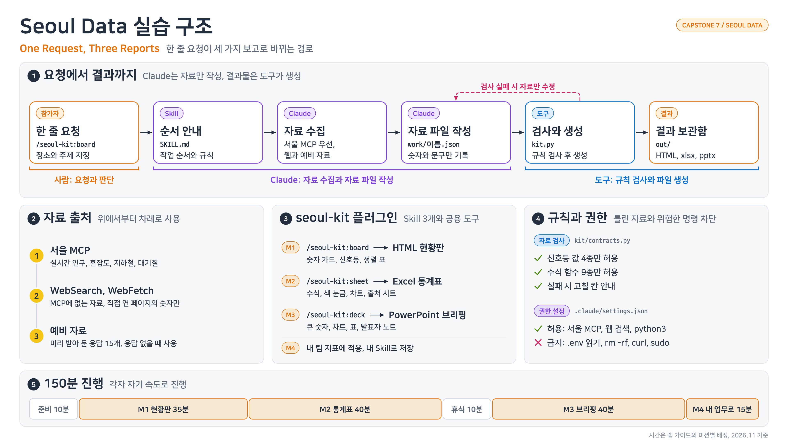
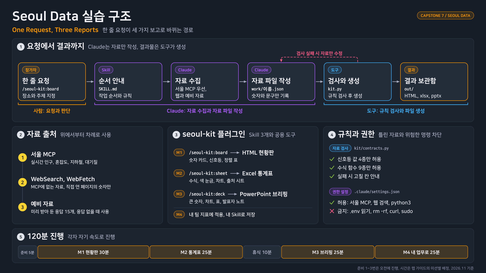
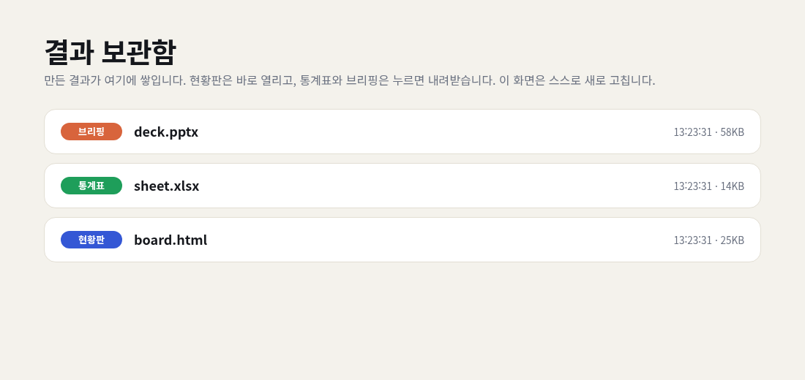
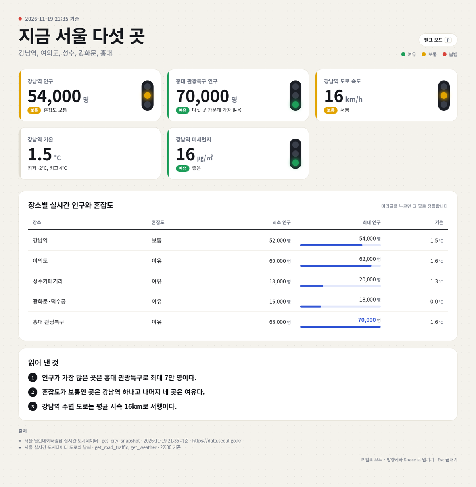
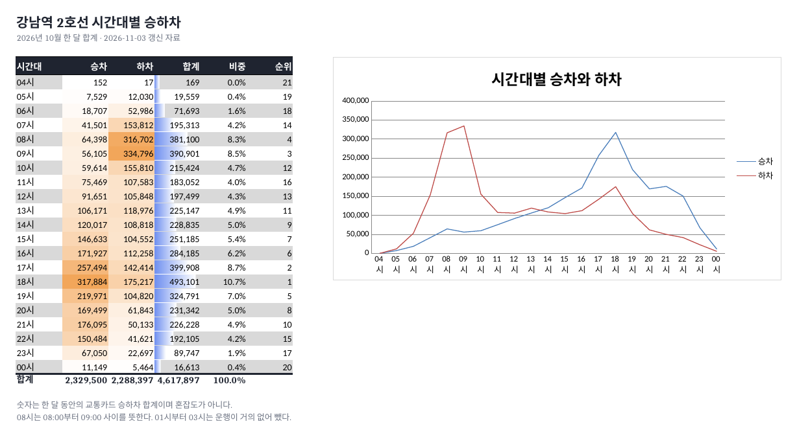
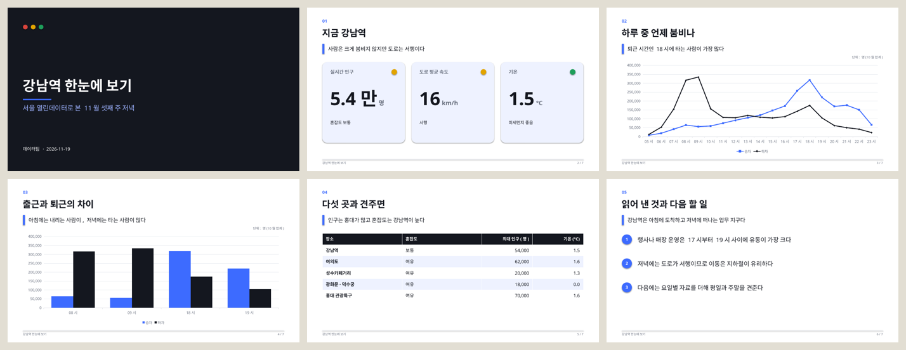

서울 데이터로 만드는 세 가지 보고
지금 이 순간의 서울 데이터를 가져와 한 화면 현황판, 통계표, 보고 자료를 차례로 만듭니다. 코드를 쓰지 않고 말로 시키고 말로 고칩니다. 장소와 역은 여러분이 고르고, 숫자는 실시간이라 옆 사람과 결과가 다릅니다. 각자 자기 속도로 진행합니다.


준비, 플러그인 설치와 서울 데이터 연결
5분실습 자료를 받아 놓고, 오늘 쓸 seoul-kit 플러그인을 설치한 다음, 서울 열린데이터를 Claude Code에 연결합니다. 플러그인은 강의에서 본 대로 Skill과 도구를 한 묶음으로 설치하는 단위입니다.
code-server의 터미널에서 차례로 실행합니다. 첫 줄은 실습 자료를 내려받습니다. 둘째 줄은 플러그인 목록을 ~/workshop-kit에, 작업 폴더를 ~/seoul-lab에 놓고, Excel과 PowerPoint 파일을 만드는 데 쓰는 Python 라이브러리를 설치합니다.
git clone -q --depth 1 https://github.com/whchoi98/claude-code-workshop ~/claude-code-workshopbash ~/claude-code-workshop/plugins-skills-workshop/scripts/setup-lab.sh마지막에 준비가 끝났습니다가 보이면 됩니다. 다시 실행해도 괜찮습니다. 이미 만든 결과는 그대로 남습니다.
같은 터미널에서 이어서 실행합니다. 첫 줄은 방금 받은 플러그인 목록(마켓플레이스)을 등록하고, 둘째 줄은 그 안의 seoul-kit을 설치합니다.
claude plugin marketplace add ~/workshop-kitclaude plugin install seoul-kit@workshop-kit같은 터미널에서 이어서 실행합니다. 첫 줄은 서울 열린데이터를 주는 서버(MCP 서버)를 seoul이라는 이름으로 Claude Code에 등록합니다. 붙여 넣은 뒤 Enter를 누르기 전에 맨 끝의 seoul-XXXX-XXXX를 진행자가 화면에 띄운 워크숍 코드로 바꿉니다. 대문자와 숫자를 화면 그대로 넣고, 끝의 큰따옴표는 지우지 않습니다.
claude mcp add --scope user --transport http seoul https://seoul-workshop-gateway-ttx8d3jawk.gateway.bedrock-agentcore.ap-northeast-2.amazonaws.com/mcp --header "Authorization: Bearer seoul-XXXX-XXXX"둘째 줄은 연결됐는지 확인합니다.
claude mcp listseoul 줄 끝에 Connected가 보이면 됩니다. Failed to connect가 보이면 코드를 잘못 넣은 것입니다. 아래 막히면의 첫 항목대로 지우고 다시 등록하세요.
cd ~/seoul-lab && claude처음 열면 이 폴더를 신뢰할지 묻습니다. Yes를 고릅니다. 이 폴더에는 오전에 배운 설정 파일이 들어 있어서 서울 데이터 도구와 결과물 만들기는 승인 창 없이 진행됩니다.
/mcp목록에 seoul이 연결됨으로 보이면 됩니다. 보이지 않으면 아래 막히면의 첫 항목을 보세요. 이어서 실시간 질문을 하나 던집니다.
지금 광화문 어때? 사람 많아?현황판, 지금 서울 세 곳
30분내가 고른 장소 세 곳의 지금 모습을 HTML 한 화면으로 만듭니다. 주간 현황 보고 화면을 만드는 일과 같습니다. 큰 숫자 카드와 신호등, 눌러서 정렬하는 비교표, 출처가 한 화면에 나옵니다.
회사 근처, 집 근처, 가 보고 싶은 곳처럼 내 장소를 고르세요. 서울의 주요 장소 121곳이 들어 있습니다. Claude가 장소마다 실시간 데이터를 가져오고, 자료 파일을 쓰고, 현황판을 만듭니다. 20초쯤 걸립니다.
/seoul-kit:board 강남역, 여의도, 성수브라우저 새 탭을 열고, 지금 쓰는 code-server 주소 끝에 /proxy/8000/을 붙여 들어갑니다. 오늘 만드는 결과가 모두 이 보관함에 쌓입니다. 탭을 열어 두면 새 결과가 스스로 나타납니다.

현황판을 눌러 열고, 표 머리글을 눌러 인구가 많은 순으로 정렬해 보세요. 키보드 P를 누르면 발표 모드가 되고 방향키로 카드를 하나씩 넘깁니다. 맨 아래에는 출처와 기준 시각이 있습니다.

마음에 안 드는 곳을 말로 고칩니다. 셋 가운데 하나를 골라 시켜 보고, 보관함에서 현황판을 새로 고쳐 확인하세요. 시간이 남으면 나머지도 해 봅니다.
도로 평균 속도와 미세먼지도 카드로 넣어 줘신호등 이름을 한산, 보통, 혼잡으로 바꾸고 제목을 "점심시간 우리 동네"로 바꿔 줘주차장 빈자리도 표에 열로 추가할 수 있어? 가능하면 해 줘현황판에는 지켜야 할 규칙이 있습니다. 규칙을 어기면 어떻게 되는지 직접 봅니다.
실험이야. work 폴더의 현황판 자료 파일에서 첫 번째 카드의 signal을 blue로 바꾸고 다시 만들어 봐. 무슨 일이 생기는지 그대로 보여 주고, 고치지는 마검사 실패와 함께 어느 칸이 왜 틀렸는지 나옵니다. 사람이 잘못 고쳐도, AI가 잘못 써도 같은 검사를 거칩니다. 확인했으면 되돌립니다.
이제 원래대로 되돌리고 다시 만들어 줘| 누구에게 | 해 볼 것 |
|---|---|
| 누구나 | 대표 핫스팟 7곳만 비교하기. /seoul-kit:board 강남역, 홍대 관광특구, 명동 관광특구, 잠실 관광특구, 광화문, 여의도, 성수를 실행하고, 표 머리글을 눌러 정렬해 일곱 곳 가운데 어디가 가장 붐비는지 확인하기 |
| 데이터 직군 | get_population 도구로 강남역의 연령대 비율을 가져와 표로 바꿔 줘를 시키고, 비율의 합이 100인지 확인하기 |
| 개발자 | out/의 HTML을 열어 board-data 안의 값을 직접 틀리게 고친 뒤 브라우저에서 열기. 화면이 무엇을 보여 주는지 확인하기 |
통계표, 숫자를 표로 따지기
25분숫자를 Excel 통계표로 만듭니다. 합계, 비율, 순위는 Claude가 계산해서 적는 것이 아니라 Excel 수식으로 들어갑니다. 받은 사람이 값을 고치면 계산이 따라 바뀝니다.
아래 넷 가운데 하나를 고르거나, 역과 구 이름을 내 것으로 바꾸세요.
/seoul-kit:sheet 강남역 2호선 시간대별 승하차/seoul-kit:sheet 서울 25개 자치구의 지금 대기질. 미세먼지가 높은 순으로/seoul-kit:sheet 성동구 최근 아파트 실거래. 면적당 가격 열도 넣어 줘/seoul-kit:sheet 이번 달 서울 무료 문화행사 목록결과 보관함에서 통계표를 누르면 내 컴퓨터로 내려받습니다. 열어서 합계나 비중 칸을 눌러 수식이 들어 있는지 보고, 숫자 하나를 바꿔 합계와 순위가 따라 바뀌는지 확인하세요. 머리글의 필터로 일부만 남기면 합계 줄도 바뀝니다. 마지막 시트는 출처입니다.

셋 가운데 하나를 골라 시켜 봅니다. 다른 주제를 골랐다면 역 이름과 열 이름을 내 표에 맞게 바꾸세요. 고친 뒤 보관함에서 다시 내려받습니다.
시트를 하나 더 만들어서 성수역과 나란히 비교해 줘. 두 역의 배율 열도 넣어 줘10월은 31일이니까 하루 평균 열을 수식으로 추가해 줘차트를 막대로 바꾸고, 가장 붐비는 시간대 세 개를 notes에 적어 줘서울 데이터에 없는 것은 웹에서 찾습니다. Claude가 검색하고 페이지를 직접 열어 확인한 뒤 출처 주소를 적습니다. 찾지 못했다는 답도 정상입니다.
이 표와 견줄 만한 기준을 웹에서 하나 찾아 줘. 예를 들면 지하철 전체에서 이 역의 순위나 지난해 수치. 직접 열어 확인한 숫자만 시트로 추가하고 출처 주소를 적어 줘. 못 찾으면 못 찾았다고 말해 줘| 누구에게 | 해 볼 것 |
|---|---|
| 누구나 | 내 출근역과 퇴근역을 넣어 몇 시에 타야 덜 붐비는지 표로 만들기 |
| 데이터 직군 | search_dataset으로 따릉이 관련 데이터셋을 찾아서 원자료를 통계표로 만들어 줘를 시키고, 받은 줄 수와 전체 줄 수를 notes에 적게 하기 |
| 개발자 | 수식에 VLOOKUP을 써 달라고 시켜 보기. 검사가 왜 막는지, 허용 함수 목록이 어느 파일에 있는지 찾기 |
브리핑, 다섯 장으로 말하기
25분앞에서 만든 현황판과 통계표를 묶어 PowerPoint 보고 자료로 만듭니다. 장마다 한 줄 결론이 붙고, 표와 차트는 PowerPoint에서 고칠 수 있는 진짜 표와 차트입니다.
주제를 적지 않으면 지금까지 만든 자료를 묶습니다. 주제를 직접 적어도 됩니다. 한 번 확인한 숫자는 다시 가져오지 않고 이어 씁니다.
/seoul-kit:deck/seoul-kit:deck 강남역 저녁 유동 브리핑. 앞에서 만든 자료를 쓰고 팀장에게 보고하는 다섯 장으로차트를 눌러 데이터 편집이 되는지 보고, 슬라이드 아래 발표자 노트에 대본이 들어 있는지 확인하세요. 표지와 출처 장은 자동으로 붙습니다.

셋 가운데 하나를 골라 시켜 봅니다. 고친 뒤 보관함에서 다시 내려받아 확인하세요.
색을 forest로 바꿔 줘두 번째 장의 한 줄 결론을 더 짧고 분명하게 고쳐 줘. 숫자를 되풀이하지 말고 뜻을 적어 줘표가 있는 장을 막대 차트로 바꿔 줘보고 전에 숫자가 어디서 왔는지 되짚습니다. 표를 받은 뒤 숫자 하나를 골라 통계표와 직접 대조하세요.
브리핑에 들어간 숫자를 전부 뽑아서, 각각 어느 자료의 어느 값에서 왔는지 표로 보여 줘. 직접 계산한 값은 계산식을 적어 줘이 주제의 배경이 되는 소식이나 정책을 웹에서 찾아 한 장으로 넣습니다. Claude가 직접 연 페이지만 쓰고 출처 주소를 붙입니다.
이 주제와 관련된 최근 소식이나 정책을 웹에서 하나 찾아서 정리 장 앞에 한 장으로 넣어 줘. 직접 연 페이지만 쓰고 출처 주소를 붙여 줘| 누구에게 | 해 볼 것 |
|---|---|
| 누구나 | 옆 사람에게 1분 동안 설명하기. 한 줄 결론만 읽어도 이야기가 이어지는지 보기 |
| 데이터 직군 | 같은 숫자로 결론이 반대인 브리핑을 만들어 달라고 시켜 보기. 어떤 숫자를 골랐는지 견주고, 선택이 결론을 어떻게 바꾸는지 이야기하기 |
| 개발자 | 플러그인 폴더에서 테마 색이 정의된 곳을 찾아 다섯 번째 테마를 추가하기 |
내 업무로 바꾸기
25분
서울 데이터 자리에 내 자료를 넣습니다. 작업 폴더의 data/team-kpi.csv는 연습용으로 지어낸 팀 지표입니다. 실제 업무 자료는 오늘 올리지 않습니다.
먼저 하나를 직접 만들어 봅니다. 신호등 이름과 기준은 내가 정합니다.
data/team-kpi.csv로 현황판을 만들어 줘. 신호등은 달성, 주의, 미달로 하고, 기준은 재문의율 7% 이하면 달성, 9% 이하면 주의, 그보다 높으면 미달이야매달 같은 보고를 한다면 방금 한 요청을 Skill로 남깁니다. 다음 달에는 한 줄이면 됩니다. 이번에는 통계표와 브리핑까지 한 번에 만들도록 적어 둡니다. 저장할 때 승인 창이 뜨면 내용을 읽고 Yes를 고릅니다.
방금 한 요청을 "monthly-report"라는 Skill로 만들어 줘. 이 폴더의 .claude/skills 안에 두고, CSV 파일 경로를 받아서 현황판, 통계표, 브리핑을 차례로 만들게 해 줘. 현황판은 방금 쓴 신호등 기준을 그대로 적고, 통계표에는 처리율 열을 수식으로 넣고 월별 추이 차트를 붙이고, 브리핑은 두 결과를 묶은 월간 보고로 만들게 해 줘만든 뒤 Claude Code를 끝냈다가(Ctrl+C 두 번) 터미널에서 claude로 다시 시작하고 실행합니다.
/monthly-report data/team-kpi.csv세 결과가 차례로 만들어지며 1분쯤 걸립니다. 결과 보관함에서 새 결과 세 개를 확인하세요.
내 업무에서 매주 또는 매달 되풀이하는 보고를 하나 떠올려 대괄호 안을 바꿔 물어보세요. 이 답이 Day 2 숙제의 출발점입니다.
나는 매주 [여기에 내 업무를 적으세요. 예: 고객 문의 건수를 엑셀로 정리해 팀장에게 메일로 보고]를 해. 오늘 배운 방식으로 바꾸려면 어떤 자료가 필요하고 어떤 순서로 하면 될지 정리해 줘시간이 남으면, 더 해 보기
선택네 미션을 모두 마친 분을 위한 실습 다섯 가지입니다. 순서는 없습니다. 끌리는 것 하나만 골라도 되고, 하나에 5~10분쯤 걸립니다. 체크포인트와 위쪽 진행 표시에는 들어가지 않습니다.
| 실습 | 만드는 것 | 해 보는 것 |
|---|---|---|
| 1. 아까와 지금 | 통계표 | 앞에서 만든 결과를 기준으로 두고 변화를 본다 |
| 2. 퇴근길 한 화면 | 현황판 | 한 장소를 여러 종류의 데이터로 본다 |
| 3. 모임 장소 고르기 | 브리핑 | 기준을 주고 추천과 근거를 받는다 |
| 4. 다음 달이 왔다면 | 내 Skill이 만드는 세 결과 | 새 자료로 다시 실행하고, Skill에 규칙을 더한다 |
| 5. 보고 마무리 | 고친 브리핑, 메일 문안 | 받는 사람 입장에서 검토시키고 고친다 |
미션 1에서 현황판을 만든 뒤로 시간이 꽤 지났습니다. 같은 장소를 지금 다시 가져와 그때와 견줍니다. 현황 보고에서는 지난번과 무엇이 달라졌는지가 먼저 읽힙니다. Claude는 work 폴더에 남아 있는 현황판 자료를 그때 값으로 쓰고, 지금 값만 새로 받습니다.
아까 만든 서울 현황판의 장소들을 지금 다시 가져와 줘. 그때와 지금의 인구를 나란히 놓은 통계표로 만들고, 차이와 변화율은 수식 열로 넣어 줘. 가장 많이 달라진 곳은 notes에 적어 줘내려받아 변화율 칸에 수식이 들어 있는지 확인하세요. 낮과 저녁처럼 시간대가 다르면 차이가 크게 나옵니다. 이 차이를 추세로 읽어도 되는지 Claude에게 물어보세요.
미션 1은 여러 장소를 같은 데이터로 비교했습니다. 이번에는 한 장소를 여러 데이터로 봅니다. 지하철 도착, 도로, 날씨, 혼잡도는 서로 다른 도구에서 오고, Skill이 한 화면으로 묶습니다. 강남역을 내가 퇴근할 때 지나는 역으로 바꾸세요.
/seoul-kit:board 강남역 퇴근길. 지하철 도착 정보를 표로 넣고, 도로 속도와 날씨와 지금 혼잡도를 카드로 모아 줘현황판 맨 아래 출처에 도구가 몇 가지 적혔는지 세어 보세요. 지하철 도착 정보는 1분 안에 바뀌므로, 다시 만들어 달라고 하면 표가 달라집니다.
지금까지 만든 브리핑은 현황을 알렸습니다. 이번에는 결정을 돕는 브리핑을 만듭니다. 기준을 내가 정해 주면 Claude가 데이터를 받아 한 곳을 추천하고 이유를 적습니다. 장소 세 곳과 기준은 내 것으로 바꿔도 됩니다.
/seoul-kit:deck 오늘 저녁 팀 모임 장소 고르기. 강남역, 성수, 여의도의 혼잡도와 상권을 지금 다시 받아서, 덜 붐비고 식당 상권이 활발한 곳을 추천해 줘. 세 곳을 비교하는 표, 추천하는 곳과 이유, 가기 전에 확인할 것까지 세 장으로추천이 마음에 들지 않으면 기준을 바꿔 다시 시켜 보세요. 상권 숫자는 카드 결제의 일부만 집계한 값이라, 금액 자체보다 평소에 견준 수준으로 읽습니다.
Skill로 남긴 보람은 다음 달에 드러납니다. 연습용 팀 지표에 12월 한 줄을 더하고, 미션 4에서 쓴 한 줄을 다시 실행합니다. 12월은 일부러 나쁜 달로 넣습니다.
data/team-kpi.csv에 2026-12 줄을 추가해 줘. 문의 접수 540, 처리 완료 498, 평균 처리 시간 7.2, 재문의율 9.6, 만족도 3.9야/monthly-report data/team-kpi.csv결과 보관함에서 현황판을 새로 고치면 12월이 미달로 칠해져 있습니다. 통계표와 브리핑에도 12월이 들어갔습니다. 이어서 Skill에 규칙을 하나 더합니다. Skill은 한 번 쓰고 끝내는 문서가 아니라 보고하면서 다듬는 문서입니다. 승인 창이 뜨면 내 Skill 문서를 고치는 것인지 읽고 Yes를 고릅니다. 고치는 곳 수만큼 여러 번 뜰 수 있습니다.
monthly-report Skill에 규칙을 하나 추가해 줘. 지난달보다 나빠진 지표가 있으면 현황판의 읽어 낸 것 첫 줄과 브리핑 첫 장에서 그 지표부터 알리게 해 줘/monthly-report data/team-kpi.csv현황판의 읽어 낸 것 첫 줄과 브리핑 첫 장이 나빠진 지표로 시작하는지 확인하세요. 바뀌지 않았다면 Claude Code를 끝냈다가 다시 시작한 뒤 실행합니다.
보내기 전에 받는 사람 입장에서 한 번 읽습니다. Claude에게 팀장 역할을 맡겨 질문과 약한 곳을 먼저 받아 봅니다.
앞에서 만든 서울 브리핑을 받는 팀장 입장에서 읽어 줘. 물어볼 만한 질문 세 개와 근거가 가장 약한 장 하나를 짚어 줘. 아직 고치지는 마지적이 맞는지는 내가 먼저 판단합니다. 받아들일 만하면 고치게 하고, 보낼 메일 문안까지 받습니다.
짚은 장을 고쳐서 다시 만들고, 이 브리핑을 첨부해 보낼 메일 본문을 다섯 줄로 써 줘. 숫자는 브리핑에 있는 것만 써 줘막히면
참고아래에서 내 증상을 찾아 그대로 해 보고, 그래도 안 되면 손을 들어 진행자를 부르세요.
워크숍 코드를 잘못 넣었거나 준비 3번을 건너뛴 것입니다. Claude Code가 열려 있으면 /exit로 끝내고 터미널에서 차례로 실행합니다. 첫 줄은 잘못 등록된 것을 지웁니다. 등록한 적이 없으면 그런 이름이 없다고 나오는데 그대로 넘어갑니다. 둘째 줄은 준비 3번의 명령입니다. 끝의 seoul-XXXX-XXXX를 화면의 코드로 바꿔 실행하고, claude mcp list로 다시 확인합니다.
claude mcp remove seoulclaude mcp add --scope user --transport http seoul https://seoul-workshop-gateway-ttx8d3jawk.gateway.bedrock-agentcore.ap-northeast-2.amazonaws.com/mcp --header "Authorization: Bearer seoul-XXXX-XXXX"여러 사람이 함께 쓰는 서버라 잠깐 밀릴 수 있습니다. 1분 뒤 다시 시키거나, 미리 받아 둔 자료로 진행하세요.
서울 MCP가 응답하지 않아. data/seoul-sample 폴더의 미리 받아 둔 자료로 만들어 줘. 화면에 미리 받아 둔 자료라고 적어 줘주소 끝에 빗금까지 넣었는지 확인하세요. /proxy/8000/입니다. 그래도 안 열리면 Claude에게 시킵니다.
결과 보관함을 켜 줘검사 실패가 나온 칸을 규칙에 맞게 줄이거나 고쳐서 다시 만들어 줘. 규칙은 바꾸지 마| 증상 | 해 볼 것 |
|---|---|
| 승인 창이 뜬다 | 무엇을 하려는지 읽고, 이 폴더 안의 파일을 쓰거나 결과를 만드는 일이면 Yes. 모르는 명령이면 진행자를 부른다 |
| Excel에서 합계가 0으로 보인다 | 위쪽 노란 띠의 편집 사용을 누른다 |
| 내 Skill을 저장하지 못했다고 한다 | 저장할 때 뜨는 승인 창에서 Yes를 고르고 다시 시킨다. 창이 뜨지 않고 거부되면 진행자를 부른다 |
/seoul-kit:을 쳐도 목록이 안 나온다 | Claude Code를 끝냈다가 다시 시작한다. 그래도 없으면 준비 2번의 설치 명령을 다시 실행한다 |
서울 데이터를 연결할 때 already exists가 나온다 | 이미 등록돼 있다. claude mcp list에서 Connected면 그대로 진행하고, Failed to connect면 위 첫 항목대로 지우고 다시 등록한다 |
| 잘 되다가 서울 데이터 서버가 코드를 거부한다고 나온다 | 워크숍 코드가 바뀌었거나 만료된 것이다. 진행자를 부른다. 새 코드를 받아 위 첫 항목대로 다시 등록한다 |
자료를 받을 때 already exists가 나온다 | 이미 받은 것이다. 준비 1번의 둘째 줄부터 실행한다 |
| 플러그인 목록을 등록할 때 경로를 찾지 못한다고 나온다 | 준비 1번을 건너뛴 것이다. 준비 1번의 두 줄을 먼저 실행한다 |
준비 1번에서 [중단]이 나온다 | 화면을 그대로 두고 진행자를 부른다 |
마무리
오늘 한 일과 쓴 것을 나란히 놓고 봅니다.
| 한 일 | 쓴 것 |
|---|---|
| 실시간 서울 데이터를 말로 불러왔다 | MCP |
| 한 줄로 현황판, 통계표, 브리핑을 만들었다 | Plugin에 담긴 Skill |
| 먼저 끝낸 분은 없는 자료를 웹에서 찾아 출처를 붙였다 | WebSearch, WebFetch |
| 승인 창 없이 안전하게 진행했다 | 오전에 배운 설정과 권한 |
| 내 반복 업무를 Skill로 남겼다 | 내 Skill |
READING CHECK
이 페이지를 읽으셨나요?
읽음 표시는 실습 체크포인트와 별도로 관리됩니다. 아직 읽지 않음